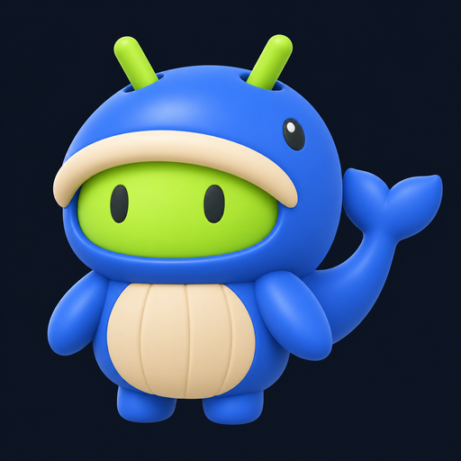

先比较风格，再统一落地。
全部采用暗色方向，保留 Logo 21、推荐顺序和五项导航。点图查看大图，勾选最多 3 套并排比较，可复制编号和偏好。
图片是 AI 生成概念稿，中文、尺寸和控件细节仍需定稿后校正。资源数值为示意；图片不代表已实现界面、手机运行效果或性能结果。
如何给出你的选择
例如：“采用 14 的模型列表，配 18 的色调，导航参考 11。”也可以只回复编号，保留一套完整设计语言。
原图包：11—15 · 16—20 · 尺寸与来源清单 · English brief

LMA / VISUAL DIRECTIONS / 2026.11.03
首页风格选型 · 10 种设计语言，同一套模型库内容。
全部采用暗色方向，保留 Logo 21、推荐顺序和五项导航。点图查看大图，勾选最多 3 套并排比较，可复制编号和偏好。
图片是 AI 生成概念稿，中文、尺寸和控件细节仍需定稿后校正。资源数值为示意；图片不代表已实现界面、手机运行效果或性能结果。
例如：“采用 14 的模型列表，配 18 的色调，导航参考 11。”也可以只回复编号，保留一套完整设计语言。
原图包：11—15 · 16—20 · 尺寸与来源清单 · English brief